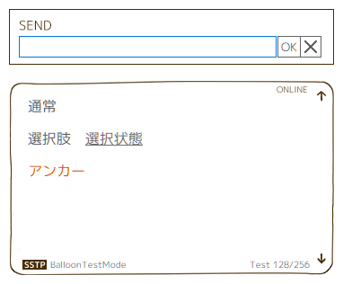
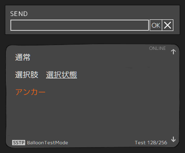
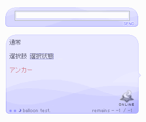
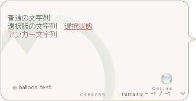
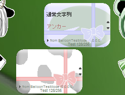
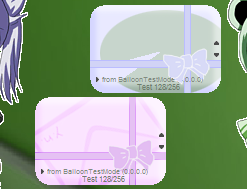

Sunao
「初心占い師ほたる」用の新しいデフォルトバルーンです。
フォント「M PLUS 1p」を同梱しています。
（MATERIAではＭＳ ゴシックで表示します）
Sunao

Sunao D
「Sunao」の黒バージョンです。

SunkLotus
「初心占い師ほたる」用バルーン（旧デフォルトバルーン）です。
デフォルトバルーンが Sunao に変更されたため、同梱も終了しました。 以下からダウンロードください。

cypress
「ひのき “the ChopSticks”」用バルーンです。

1090kb
「まっちゃみるく。」用バルーンです。
 